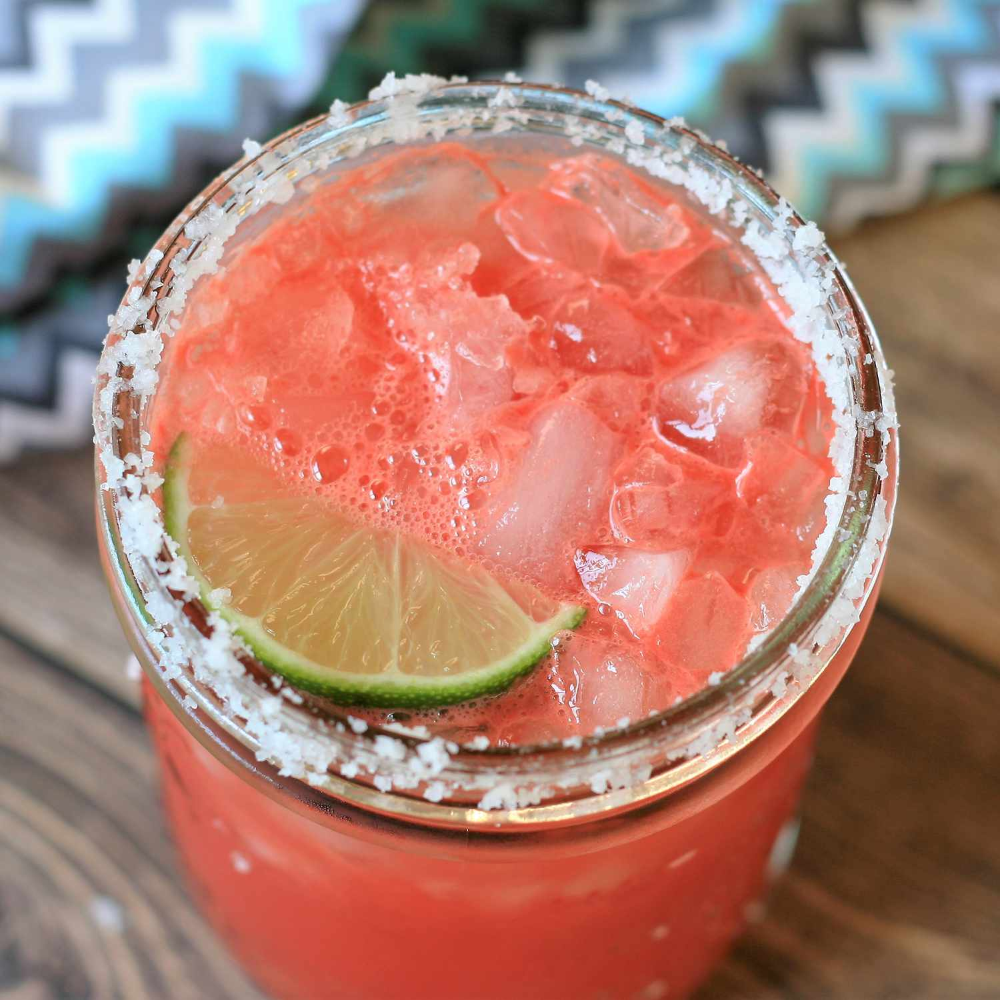

Homepage
Watermelon Magarita

Description
This fresh watermelon margarita tastes amazing and is so refreshing on hot summer days. You can serve this fruity
margarita on the rocks or frozen. This recipe includes a simple syrup which you can make ahead and store in the
refrigerator.
Ingredients
- ½ cup white sugar
- ½ cup water
- 3 strips orange zest
- 2 cups cubed seeded watermelon
- ¾ cup white tequila
- ¼ cup lime juice
- 1 pinch salt or sugar for rimming glasses
- 1 lime, cut into wedges
- 2 cups crushed ice, or as needed
Steps
- To make a simple syrup: Bring 1/2 cup sugar, water, and orange zest in a small saucepan to boil, stirring
constantly. Simmer until sugar is dissolved, about 3 minutes. Remove simple syrup from heat and allow to
cool completely.
- Place watermelon in a blender or food processor; blend until pureed.
- Stir watermelon puree into a large pitcher with prepared simple syrup, tequila, and lime juice.
- Place a small amount of salt or sugar into a saucer. Rub edge of margarita glasses with a lime wedge to
moisten. Lightly dip the rim of the glass into the saucer to rim the glass; tap off excess salt or sugar.
- Fill rimmed glasses with crushed ice; pour margarita mixture into glasses and garnish with lime wedges to
serve.